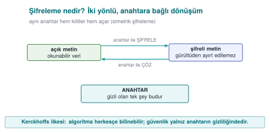
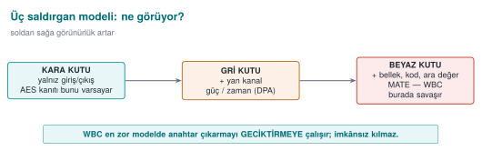
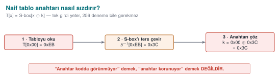
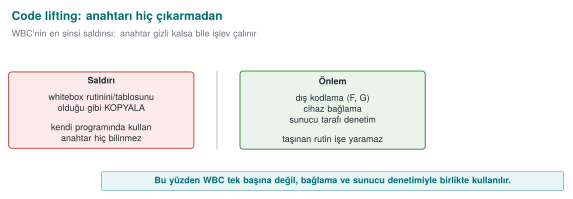
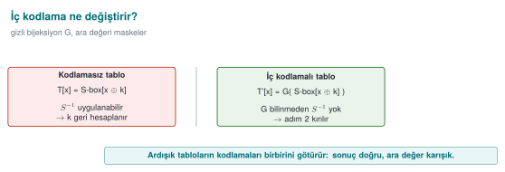
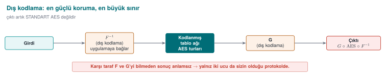
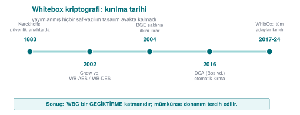
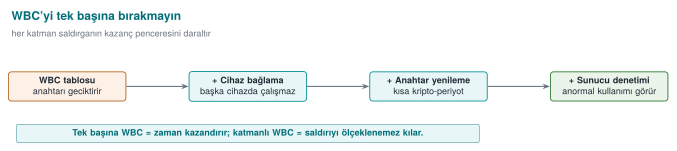
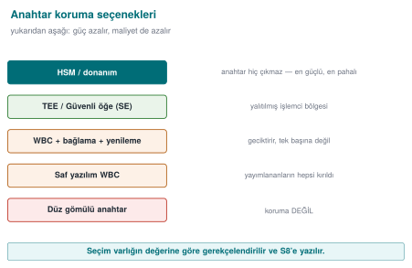

Previous slide Next slide Toggle fullscreen Open presenter view
CEN429 Secure Programming · Week 11
Whitebox Cryptography
CEN429 Secure Programming — Week 11
Asst. Prof. Dr. Uğur CORUH · 27.11.2026
RTEU Computer Engineering · 2026-2027 Fall
CEN429 Secure Programming · Week 11
Today's Plan (3 Hours)
Time
Section
Topic
0:00–0:25
1
Black/grey/white box models; WBC attacker capabilities
0:25–0:50
2
Why the problem is hard; naive solutions: embedded key, XOR, code lifting
0:55–1:40
3
Table-based WBC (Chow AES): encoding, bijections, table size/speed
1:45–2:20
4
Attack history: BGE, DFA, DCA, WhibOx; "all broken" and countermeasures
2:20–2:45
5
Its place in layered defence; hardware alternatives (TEE/SE, HSM/SoftHSM)
2:45–3:00
6–7
Flawed→attack→protection; project S8; self-check
RTEU Computer Engineering · 2026-2027 Fall
CEN429 Secure Programming · Week 11
Where Does This Week Fit?
Week 9: code obfuscation — we said "hiding doesn't protect the key"This week (11): so how do we protect the key in software? → whiteboxWeek 10: correct use of cryptography, the key lifecycle
Today we tackle the question: "what do we do while the key is in the attacker's hands?"
RTEU Computer Engineering · 2026-2027 Fall
CEN429 Secure Programming · Week 11
Learning Outcome
This week is about LO.2 / LO.4 (cryptography, secure communication).
By the end, you will be able to:
Distinguish the black/grey/white box models
Explain what whitebox does and why it isn't enough
Make the right protection decision for a key
RTEU Computer Engineering · 2026-2027 Fall
CEN429 Secure Programming · Week 11
A Warning, Up Front
Every pure-software whitebox design published to date has been broken .
So today we won't say "whitebox = secure key."
We'll say: whitebox is a layer that delays key extraction — and it is not sufficient on its own.
RTEU Computer Engineering · 2026-2027 Fall
CEN429 Secure Programming · Week 11
What We Bring from Earlier Weeks (1)

Encryption, key, symmetric/asymmetric — turning plaintext into unreadable ciphertext with a key; security rests on the key's secrecy, not the algorithm's (Week 3) AES and bit security level — the most widely used symmetric algorithm, 16-byte blocks, rounds; "n-bit security" ≈ 2ⁿ attempts (Week 10) XOR — 1 if the bits differ, 0 if they match; reversible via a^b^b=a; AES's key-addition step is a XOR (Week 5) Entropy — a measure of how random a data's bytes look; encrypted/random blocks look high-entropy (Week 2)
This week we reuse these tools in the whitebox context.
RTEU Computer Engineering · 2026-2027 Fall
CEN429 Secure Programming · Week 11
What We Bring from Earlier Weeks (2)
Debugger — a tool that runs a program step by step and reads memory/registers (gdb, x64dbg) (Week 6) Static and dynamic analysis — inspection without running / by running; we'll use this to classify attacks (Week 4) Instrumentation and emulator — tools that automatically trace a program and that emulate a real processor in software (Week 6) HSM and SoftHSM — dedicated hardware that never lets the key out, and its software emulation (Week 10)
This week we meet these again as the whitebox attacker's toolbox and our defence options.
RTEU Computer Engineering · 2026-2027 Fall
CEN429 Secure Programming · Week 11
This Week's Concepts
Each term is defined once, where it first appears in the body; here we only mark where .
Concept
Where
Black/grey/white box, the WBC attacker model
Section 1
Why the problem is hard; naive solutions (embedded key, XOR, code lifting)
Section 2
Table-based WBC: partial evaluation, internal/external encoding, bijection
Section 3
Attack history: BGE, DFA, DCA, WhibOx
Section 4
Its place in layered defence; TEE/SE, HSM/SoftHSM
Section 5
The flawed → attack → protection scenario
Section 6
Project S8, self-check
Section 7
RTEU Computer Engineering · 2026-2027 Fall
CEN429 Secure Programming · Week 11
Background · What Is an S-box?
S-box (substitution box): a fixed table that replaces one byte with another.This is AES's "byte substitution" step.
Example: a 256-entry mapping such as S-box[0x53] = 0xED.
Keep this table in mind; it's the heart of whitebox.
RTEU Computer Engineering · 2026-2027 Fall
CEN429 Secure Programming · Week 11
Lookup Table
Lookup table: an array that gives "output for a given input".T[x] = the precomputed result for x.Instead of computing, you read from the table ; it's fast.
Whitebox buries computation inside tables.
RTEU Computer Engineering · 2026-2027 Fall
CEN429 Secure Programming · Week 11
Background · What Is a Side Channel?
Side channel: an attack that uses not the algorithm's math but the physical/indirect information it leaks while running.Examples: elapsed time , power consumption, electromagnetic emission.
Classic on smart cards; shortly we'll see whitebox's software equivalent.
RTEU Computer Engineering · 2026-2027 Fall
CEN429 Secure Programming · Week 11
What Is DPA?
DPA (Differential Power Analysis): a side-channel attack that applies statistics to a device's power consumption measurements to extract the key.It doesn't look inside the device; it measures from the outside.
Keep this idea in mind; whitebox's strongest attack (DCA) is the software form of exactly this.
RTEU Computer Engineering · 2026-2027 Fall
CEN429 Secure Programming · Week 11
Background · Bijection (a One-to-One, Onto Mapping)
Bijection: a transformation that maps every input to exactly one output and is invertible .Example: f(x) = x ^ 0x5A is a bijection (its own inverse).
Whitebox wraps tables in secret bijections .
RTEU Computer Engineering · 2026-2027 Fall
CEN429 Secure Programming · Week 11
Background · TEE and Secure Element (SE)
TEE (Trusted Execution Environment): a phone processor's secure region, isolated from the operating system.Secure element (SE): a separate, tamper-resistant hardware chip that stores keys.
These are the strongest protection for a key; whitebox is for the case when they aren't available .
RTEU Computer Engineering · 2026-2027 Fall
CEN429 Secure Programming · Week 11
Now We're Ready
Terms we know:
encryption/decryption · key · symmetric/asymmetric · AES · S-box · lookup table · XOR · bit security · side channel · DPA · bijection · TEE/SE · HSM/SoftHSM
Now to the real question: what do we do while the key is in the attacker's hands?
RTEU Computer Engineering · 2026-2027 Fall
CEN429 Secure Programming · Week 11
1. Three Attacker Models
RTEU Computer Engineering · 2026-2027 Fall
CEN429 Secure Programming · Week 11
A Brief History — Whitebox Cryptography
1883 — Kerckhoffs : security must lie in the key , not in the secrecy of the system2002 — Chow et al. publish the first whitebox AES/DES (for DRM) — the birth of WBC2004 — the BGE attack breaks the first WB-AES2016 — DCA (Bos et al.): hardware DPA moves into software, breaks it automatically2017–2024 — WhibOx : every published pure-software candidate is broken
Today's rule: WBC is a delaying layer ; prefer hardware (TEE/SE/HSM) where possible.
RTEU Computer Engineering · 2026-2027 Fall
CEN429 Secure Programming · Week 11
Why a "Model"?
Before designing a defence, we must determine what the attacker can see .
This is called the attacker model .
There are three models: black, grey, white box.
RTEU Computer Engineering · 2026-2027 Fall
CEN429 Secure Programming · Week 11
Black Box
The attacker sees only input and output .
They cannot see the inside (key, intermediate values).
Typical setting: a remote server (the code is yours, the attacker connects over the network).
AES/RSA's security proofs assume this.
RTEU Computer Engineering · 2026-2027 Fall
CEN429 Secure Programming · Week 11
Grey Box
In addition to input/output, the attacker sees side channels (time, power, EM).
They can't read the inside directly, but they measure it indirectly .
Typical setting: a smart card or an embedded device in the attacker's hands.
RTEU Computer Engineering · 2026-2027 Fall
CEN429 Secure Programming · Week 11
White Box
The attacker sees everything : code, memory, every intermediate value.
And they can modify it .
Typical setting: software running on the attacker's own device.
This is the real situation for a mobile/desktop application.
RTEU Computer Engineering · 2026-2027 Fall
CEN429 Secure Programming · Week 11
Three Models Side by Side
Model
Sees / does
Environment
Black
Input/output
Remote server
Grey
+ side channel
Smart card
White
Everything + modifies
Software, own device
Crypto was designed for black box ; we're in white box .
RTEU Computer Engineering · 2026-2027 Fall
CEN429 Secure Programming · Week 11
The Three Attacker Models — What Do They See?

RTEU Computer Engineering · 2026-2027 Fall
CEN429 Secure Programming · Week 11
Here's the Problem
AES is mathematically strong. But:
In white box, the key sits in memory somewhere
The attacker can read memory
So what good is AES's strength?
A strong lock is useless if you hang the key next to the door.
RTEU Computer Engineering · 2026-2027 Fall
CEN429 Secure Programming · Week 11
The Idea of Whitebox Cryptography (WBC)
WBC: performing encryption so that the key is never explicitly in memory .The key is embedded inside precomputed lookup tables .
There is no byte sequence in memory you could point to and say "that's the key."
RTEU Computer Engineering · 2026-2027 Fall
CEN429 Secure Programming · Week 11
WBC Is Not a Definition, It's an Attacker Model
WBC was defined in 2002 by Chow and colleagues.
It's really an attacker model : "how do you encrypt if the attacker can see and modify everything?"
RTEU Computer Engineering · 2026-2027 Fall
CEN429 Secure Programming · Week 11
What Can the WBC Attacker Do? (1)
Observes:
Accesses the instructions being executed at that moment
Watches the algorithm's flow
Sees the memory being used
So they see every intermediate value the program sees.
RTEU Computer Engineering · 2026-2027 Fall
CEN429 Secure Programming · Week 11
What Can the WBC Attacker Do? (2)
Modifies:
Tampers with the program's memory
Runs only a single round of the algorithm
Alters if conditions
Alters loop counters
Injects a fault (corrupts a value)
RTEU Computer Engineering · 2026-2027 Fall
CEN429 Secure Programming · Week 11
The Source's Compliance Clause
The technical guide opens this section with the following requirement:
"Cryptographic keys shall be secured and/or hidden to protect confidentiality and integrity."
RTEU Computer Engineering · 2026-2027 Fall
CEN429 Secure Programming · Week 11
The guide says that WBC is not the only thing protecting against these attacker capabilities:
What protects the application and its assets is code hardening (Week 9) and RASP (Week 6) methods.
WBC is never presented alone , from the very first sentence.
RTEU Computer Engineering · 2026-2027 Fall
CEN429 Secure Programming · Week 11
2. The Problem and Naive Solutions
RTEU Computer Engineering · 2026-2027 Fall
CEN429 Secure Programming · Week 11
Why Is the Problem So Hard?
The core tension:
The program must access the key to encrypt
The attacker sees everything the program sees
So at some point the key is somewhere the attacker can also see
WBC tries to get past this by "baking the key into tables."
RTEU Computer Engineering · 2026-2027 Fall
CEN429 Secure Programming · Week 11
This Isn't Secrecy, It's Cost
WBC doesn't move secrecy away from the crypto.
It spreads the key across tables with a mathematical transformation.
The goal is the same as in Week 9: make extracting the key back out much more expensive .
RTEU Computer Engineering · 2026-2027 Fall
CEN429 Secure Programming · Week 11
Why Do Naive Solutions Collapse?
RTEU Computer Engineering · 2026-2027 Fall
CEN429 Secure Programming · Week 11
How the Key Leaks From a Table — Diagram

RTEU Computer Engineering · 2026-2027 Fall
CEN429 Secure Programming · Week 11
Why Do We Study What Collapses?
To see why WBC is needed.
Every failed "easy" solution turns into a secure-programming rule .
RTEU Computer Engineering · 2026-2027 Fall
CEN429 Secure Programming · Week 11
Naive 1 · Embed the Key in an Array
static const uint8_t k[16 ] = { 0x2B , 0x7E , ... };
The easiest way is the weakest way.
RTEU Computer Engineering · 2026-2027 Fall
CEN429 Secure Programming · Week 11
Naive 1 · How Is It Broken?
strings / byte scan: the 16-byte block is visibleEntropy scan: a high-entropy block says "the key is here" (the Shamir–van Someren observation)Debugger: confirms this block is used in the encryption call
Time: minutes.
RTEU Computer Engineering · 2026-2027 Fall
CEN429 Secure Programming · Week 11
Naive 1 · Rule
A plainly embedded key is not key protection.
This is exactly Week 9's rule: "string hiding doesn't store the key."
RTEU Computer Engineering · 2026-2027 Fall
CEN429 Secure Programming · Week 11
Naive 2 · "Scramble" With XOR
static const uint8_t k_gizli[16 ] = ...;
"I'll XOR the key with a mask and store that."
RTEU Computer Engineering · 2026-2027 Fall
CEN429 Secure Programming · Week 11
Naive 2 · Why Does It Collapse?
The mask is also in the binary
If the program can compute k, the attacker can too
Just one extra step; not a real barrier
Whatever the program can do, the white-box attacker can do too.
RTEU Computer Engineering · 2026-2027 Fall
CEN429 Secure Programming · Week 11
Naive Threat 3 · Code Lifting
Say WBC baked the key into tables.
The attacker copies the encrypting code fragment (tables + interpreter) as is , without ever extracting the key.
They use it in their own program: they steal the function without knowing the key.
RTEU Computer Engineering · 2026-2027 Fall
CEN429 Secure Programming · Week 11
Code Lifting — Diagram

RTEU Computer Engineering · 2026-2027 Fall
CEN429 Secure Programming · Week 11
Code Lifting · Rule
WBC saying "I hid the key" isn't enough.
Countering code lifting needs device/version binding (Section 3, shortly): the tables should only be meaningful on one specific device/version.
RTEU Computer Engineering · 2026-2027 Fall
CEN429 Secure Programming · Week 11
Naive Solutions: Summary
Naive solution
Broken by
Key embedded in an array
strings + entropy + gdb
XOR/whitening
the mask is inside too
(even WBC)
code lifting → needs device binding
RTEU Computer Engineering · 2026-2027 Fall
CEN429 Secure Programming · Week 11
Section 1–2 — Quick Check
The difference between black, grey, white box?
AES is strong, so what's the problem in white box?
Why isn't embedding the key in an array protection?
RTEU Computer Engineering · 2026-2027 Fall
CEN429 Secure Programming · Week 11
Section 1–2 — Answers
Black: input/output only · Grey: + side channels (time/power) · White: everything + modifies.The key sits in memory at some point; the white-box attacker sees it. AES's strength rests on the black box assumption.
strings + entropy scan + gdb finds it in minutes; the program has to use it.
RTEU Computer Engineering · 2026-2027 Fall
CEN429 Secure Programming · Week 11
3. Table-Based WBC (Step by Step)
RTEU Computer Engineering · 2026-2027 Fall
CEN429 Secure Programming · Week 11
What Will We Learn?
Chow and colleagues' 2002 AES design is the classic of table-based WBC.
Its idea (how it works)
Its cost (table size, speed)
Its limit (why it isn't enough)
No math on the exam; the idea and the limit are.
RTEU Computer Engineering · 2026-2027 Fall
CEN429 Secure Programming · Week 11
Reminder: Two Steps of an AES Round
XOR the state byte with the round key: x ^ kPass the result through the S-box : S-box[x ^ k]
Can these two steps be combined for a fixed k? Yes.
RTEU Computer Engineering · 2026-2027 Fall
CEN429 Secure Programming · Week 11
Step 1 · "Bake" the Key Into a Table
Normal: çıktı = S-box[ x ^ k ]
WBC: T[x] = S-box[ x ^ k ] (256 girişli tablo)
There's no longer a k variable in the code. k is baked into the table.
RTEU Computer Engineering · 2026-2027 Fall
CEN429 Secure Programming · Week 11
Step 1 · What Did We Gain?
There's no byte sequence named k in memory
There's only the T table (256 entries)
The key seems to have disappeared. But...
RTEU Computer Engineering · 2026-2027 Fall
CEN429 Secure Programming · Week 11
Step 1 · Why Is This Insecure on Its Own?
T is the S-box shifted by x ^ kThe attacker compares T with the known S-box
They recover k from the shift amount
This is why the tables need to be encoded .
RTEU Computer Engineering · 2026-2027 Fall
CEN429 Secure Programming · Week 11
Why a Toy Example?
Real AES works with 256-entry tables; that won't fit on a board.
We'll see the idea with a tiny 4-value example instead.
Goal: see by hand what "baking the key into a table" means.
RTEU Computer Engineering · 2026-2027 Fall
CEN429 Secure Programming · Week 11
Defining the Tiny S-box
Say we have 2-bit values (0,1,2,3) and this fixed S-box:
x: 0 1 2 3
S-box[x]: 3 2 0 1
This table is public (part of the algorithm, not a secret).
RTEU Computer Engineering · 2026-2027 Fall
CEN429 Secure Programming · Week 11
Key and Operation
Key k = 1 (secret).
Operation (a mini version of one AES round): output = S-box[x ^ k].
^ = XOR. x ^ 1: 0↔1, 2↔3 (flips the last bit).
RTEU Computer Engineering · 2026-2027 Fall
CEN429 Secure Programming · Week 11
Step by Step: Normal Operation
x=0 → x^1=1 → S-box[1]=2
x=1 → x^1=0 → S-box[0]=3
x=2 → x^1=3 → S-box[3]=1
x=3 → x^1=2 → S-box[2]=0
Here k=1 is used explicitly in the code. The attacker sees it.
RTEU Computer Engineering · 2026-2027 Fall
CEN429 Secure Programming · Week 11
"Bake" the Key Into a Table
Let's precompute T[x] = S-box[x ^ 1] as a table:
x: 0 1 2 3
T[x]: 2 3 1 0
There's no k in the code anymore; only T. The key seems to have disappeared.
RTEU Computer Engineering · 2026-2027 Fall
CEN429 Secure Programming · Week 11
But the Key Leaks! (Without Encoding)
The attacker compares T with the known S-box:
S-box: 3 2 0 1
T: 2 3 1 0
Knowing that T[x] = S-box[x ^ k], they try which k fits: k=1 fits.
Result: an unencoded table gives the key away. This is exactly why internal/external encoding exists.
RTEU Computer Engineering · 2026-2027 Fall
CEN429 Secure Programming · Week 11
Step 2 · Grow the Tables (T-box)
Instead of a single-byte mapping, combine the S-box with AES's mixing step (MixColumns)
Result: larger tables (T-box ) that take 8 bits in and give 32 bits out
The XORs between bytes also become small XOR tables (4 bits)
RTEU Computer Engineering · 2026-2027 Fall
CEN429 Secure Programming · Week 11
Step 2 · Result
The whole round turns into a network of lookup tables
No explicit arithmetic key operation is visible anywhere
But the tables can still be examined on their own → encoding is required
RTEU Computer Engineering · 2026-2027 Fall
CEN429 Secure Programming · Week 11
Step 3 · Internal Encodings
Apply a secret bijection to each table's output
Apply its inverse at the input of the next table
Consecutive encodings cancel out → the result is still correct
But intermediate values look scrambled .
RTEU Computer Engineering · 2026-2027 Fall
CEN429 Secure Programming · Week 11
Internal Encoding — Diagram

RTEU Computer Engineering · 2026-2027 Fall
CEN429 Secure Programming · Week 11
Step 3 · What Does It Prevent?
It aims to stop an attacker examining a table on its own .
Because that table's input/output has been scrambled by a secret encoding.
RTEU Computer Engineering · 2026-2027 Fall
CEN429 Secure Programming · Week 11
The Idea of Encoding (Tiny)
Apply a secret mapping E to the output: T'[x] = E(T[x]).
E: 0→1, 1→3, 2→0, 3→2 (gizli bijeksiyon)
T': E(2) E(3) E(1) E(0) = 0 2 3 1
Now T' doesn't resemble S-box; a simple comparison doesn't give up k.
RTEU Computer Engineering · 2026-2027 Fall
CEN429 Secure Programming · Week 11
The Price of Encoding
The next step must apply E's inverse for the result to come out right.
In real AES this is done by chaining tables (internal encodings).
Every encoding means an extra table and more size → cost .
Even the tiny example shows the idea: secrecy isn't cheap.
RTEU Computer Engineering · 2026-2027 Fall
CEN429 Secure Programming · Week 11
Step 4 · Mixing Bijections
On top of the internal encodings, linear mixing matrices over GF(2) (8×8, 32×32)
These spread information across tables
Information leaking from a single table alone doesn't mean much
(GF(2) = the math of working with bits and XOR arithmetic; no detail needed.)
RTEU Computer Engineering · 2026-2027 Fall
CEN429 Secure Programming · Week 11
Step 4 · Table Types
In Chow's design these encoded/mixed tables have types (types I–IV in the literature).
Each type plays a different role.
For this course, it's enough to know: "the tables aren't all one type, they're varied."
RTEU Computer Engineering · 2026-2027 Fall
CEN429 Secure Programming · Week 11
Step 5 · External Encodings F and G
On the outermost layer, the whole cipher is wrapped with two secret bijections: F and G
Source guide: "the whitebox AES operation is encapsulated with two randomly chosen non-singular matrices called F and G"
So the network is no longer plain AES:

RTEU Computer Engineering · 2026-2027 Fall
CEN429 Secure Programming · Week 11
Step 5 · Why Is External Encoding Strong?
What the attacker sees at input/output is not standard AES's input/output
It makes many attacks (statistical/algebraic) that look only at the tables much harder
RTEU Computer Engineering · 2026-2027 Fall
CEN429 Secure Programming · Week 11
Step 5 · But This Is Also the Biggest Limit
G ∘ AES ∘ F⁻¹ is not standard AES.
The other side (server/other endpoint) gets a meaningless result unless it knows and undoes F and G
So externally-encoded WBC is only usable in a protocol where you control both ends
It may not be usable in a protocol like EMV that expects standard AES
RTEU Computer Engineering · 2026-2027 Fall
CEN429 Secure Programming · Week 11
Five Steps · Summary
Bake the key into a table
Grow the tables (T-box + XOR tables)
Internal encodings
Mixing bijections
External encodings (F, G)
Result: no explicit key; everything lives in encoded tables.
RTEU Computer Engineering · 2026-2027 Fall
CEN429 Secure Programming · Week 11
The Lesson From the Tiny Example
Baking the key into a table doesn't make it invisible (encoding is required)
Encoding solves the problem but adds size/complexity
In reality the tables run to hundreds of KB
This is the intuition behind the five steps in Section 2.
RTEU Computer Engineering · 2026-2027 Fall
CEN429 Secure Programming · Week 11
The Cost of WBC
RTEU Computer Engineering · 2026-2027 Fall
CEN429 Secure Programming · Week 11
WBC Isn't Free (1)
The price of baking the key into tables: huge tables .
Metric
Approximate (order of magnitude)
Table size
Hundreds of KB (~770 KB)
Comparison
Standard AES key: 16–32 bytes
RTEU Computer Engineering · 2026-2027 Fall
CEN429 Secure Programming · Week 11
WBC Isn't Free (2)
Metric
Approximate (order of magnitude)
Table lookups per round
Thousands (~3,000)
Speed
~50× slower than standard AES
RTEU Computer Engineering · 2026-2027 Fall
CEN429 Secure Programming · Week 11
A Sense of Scale: a Table-Size Calculation
Example: 288 tables × 1 KB ≈ 294,912 bytes (~288 KB).
The point isn't the exact number, it's the order of magnitude
This is why WBC is applied only to selected, critical operations
The same logic as Week 9's virtualization (K-10)
RTEU Computer Engineering · 2026-2027 Fall
CEN429 Secure Programming · Week 11
Section 3 — Quick Check
Why is T[x] = S-box[x ^ k] insecure on its own?
The difference between internal and external encoding?
What's the biggest limit of external encoding (F, G)?
Why is WBC applied only to selected operations?
RTEU Computer Engineering · 2026-2027 Fall
CEN429 Secure Programming · Week 11
Section 3 — Answers
T is the known S-box shifted by x^k; comparing the two tables recovers k .Internal: scrambles the intermediate values between tables · External (F,G): wraps the whole cipher (G∘AES∘F⁻¹).It's no longer standard AES ; the other side has to know F/G — it may not be usable in standards like EMV.
Tables run to hundreds of KB + ~50× slower; the cost limits it to small/critical operations only.
RTEU Computer Engineering · 2026-2027 Fall
CEN429 Secure Programming · Week 11
4. Attack History and Countermeasures
RTEU Computer Engineering · 2026-2027 Fall
CEN429 Secure Programming · Week 11
WBC's Breaking History — Diagram

RTEU Computer Engineering · 2026-2027 Fall
CEN429 Secure Programming · Week 11
Why Do We Look at History?
How much you should trust a protection is told by its history of being broken .
Every row is an inference for the defender.
RTEU Computer Engineering · 2026-2027 Fall
CEN429 Secure Programming · Week 11
2002 · Birth
Chow and colleagues publish the WB-AES and WB-DES designs.
The table-based approach is born.
Inference: the idea is promising; but untested.
RTEU Computer Engineering · 2026-2027 Fall
CEN429 Secure Programming · Week 11
2004 · The BGE Attack
BGE (Billet–Gilbert–Ech-Chatbi): breaks Chow AES in practical time (~2³⁰ operations).Solves the internal encodings.
Inference: internal encodings alone are not enough .
RTEU Computer Engineering · 2026-2027 Fall
CEN429 Secure Programming · Week 11
2007 · WB-DES Falls
Goubin, Wyseur, and others break WB-DES and its externally-encoded variants.
Inference: DES-based WBC is abandoned.
RTEU Computer Engineering · 2026-2027 Fall
CEN429 Secure Programming · Week 11
2010s · The "More Tables" Attempt
Karroumi's "dual AES" hardening is also broken (~2²²).
Inference: more tables is not more strength.
RTEU Computer Engineering · 2026-2027 Fall
CEN429 Secure Programming · Week 11
2015 · DFA (Fault Injection)
DFA (Differential Fault Analysis): injects a fault into a value while running and computes the key back from the corrupted output."Unboxing the White-Box" (Black Hat EU).
Inference: it can be broken without knowing the design's internal math.
RTEU Computer Engineering · 2026-2027 Fall
CEN429 Secure Programming · Week 11
2016 · DCA (the Most Important One)
DCA (Differential Computation Analysis): collects a trace of the intermediate values produced while running, and extracts the key with DPA-like statistics.It ignores internal encodings most of the time.
Inference: classic side-channel defences are also needed for WBC.
RTEU Computer Engineering · 2026-2027 Fall
CEN429 Secure Programming · Week 11
The DCA Attack — Diagram
RTEU Computer Engineering · 2026-2027 Fall
CEN429 Secure Programming · Week 11
Intuition: What Is It Tracking?
While WBC runs, it reads intermediate values from the tables.
These intermediate values change depending on the secret key.
DCA collects a trace of these values.
RTEU Computer Engineering · 2026-2027 Fall
CEN429 Secure Programming · Week 11
How Does Statistics Give Up the Key?
The attacker makes a guess for one key byte.
From the guess, they compute how the intermediate value should behave.
Among the collected traces, the guess that fits best is the correct byte.
This is the software form of DPA (power analysis).
RTEU Computer Engineering · 2026-2027 Fall
CEN429 Secure Programming · Week 11
Why Doesn't Internal Encoding Stop DCA?
Internal encoding scrambles the intermediate value but is a one-to-one mapping (bijection)
Statistical correlation often survives it
This is why WBC designs remained vulnerable to DCA after 2016
RTEU Computer Engineering · 2026-2027 Fall
CEN429 Secure Programming · Week 11
2017–2024 · WhibOx Competitions
Academia and industry submit their designs to a competition.
Every submitted design gets broken .
Inference (today): there is no published pure-software WBC left standing.
RTEU Computer Engineering · 2026-2027 Fall
CEN429 Secure Programming · Week 11
Chronology · Summary
Year
Event
Inference
2002
Chow WB-AES/DES
Birth
2004
BGE
Internal encoding isn't enough
2007
WB-DES broken
DES abandoned
2010s
Karroumi broken
More tables ≠ strength
2015
DFA
Without knowing the math
2016
DCA
Side-channel defence needed
2017–24
WhibOx
All broken
RTEU Computer Engineering · 2026-2027 Fall
CEN429 Secure Programming · Week 11
Why Do DCA and DFA Also Hit New Designs?
Because neither one tries to solve the design's secret math:
DCA: doesn't open the box; collects a trace while running, finds the key with statisticsDFA: injects a fault while running, computes it from the corrupted output
Because they're general and portable , they threaten every design.
RTEU Computer Engineering · 2026-2027 Fall
CEN429 Secure Programming · Week 11
So What Do We Do? (Countermeasures)
Research hasn't stopped; but no countermeasure says "now it's secure."
They all raise the cost and are used together . In order:
RTEU Computer Engineering · 2026-2027 Fall
CEN429 Secure Programming · Week 11
Countermeasure 1 · Non-Linear Masking
Tries to break the linear correlation DCA relies on (e.g. Biryukov–Udovenko 2018).
Makes the statistical attack harder.
RTEU Computer Engineering · 2026-2027 Fall
CEN429 Secure Programming · Week 11
Countermeasure 2 · External Encoding (F, G)
Makes DCA/DFA/BGE harder.
But we already saw the limit: it breaks standard-AES compatibility.
RTEU Computer Engineering · 2026-2027 Fall
CEN429 Secure Programming · Week 11
Countermeasure 3 · Layered Defence
Week 9's obfuscation rules around WBC
Week 6's RASP (anti-debug, tamper/integrity checking)
Goal: make DCA's trace collection and DFA's fault injection harder
RTEU Computer Engineering · 2026-2027 Fall
CEN429 Secure Programming · Week 11
Layered WBC — Diagram

RTEU Computer Engineering · 2026-2027 Fall
CEN429 Secure Programming · Week 11
Countermeasure 4 · Key Rotation
If the key rotates often, extracting one key is worth less
Week 10: crypto-period (a key's lifetime)
RTEU Computer Engineering · 2026-2027 Fall
CEN429 Secure Programming · Week 11
Countermeasure 5 · Device/Version Binding
Tables are only meaningful on one specific device/version
Blocks code lifting
RTEU Computer Engineering · 2026-2027 Fall
CEN429 Secure Programming · Week 11
Countermeasure 6 · Server-Side Risk Checking
Whatever protection exists on the edge, the transaction is also evaluated on the server
Rate limiting, anomaly detection, counter/ATC checking
The last and most reliable defence
RTEU Computer Engineering · 2026-2027 Fall
CEN429 Secure Programming · Week 11
Countermeasure 7 · Move to Hardware
If possible, never put the key in software at all
TEE, secure element (SE), HSM
This is the subject of the next section.
RTEU Computer Engineering · 2026-2027 Fall
CEN429 Secure Programming · Week 11
The Core Rule (Again)
WBC is a layer , not a solution.
The right statement: "I'm delaying key extraction by this much; my real assurance comes from key rotation, device binding, and server-side risk checking."
RTEU Computer Engineering · 2026-2027 Fall
CEN429 Secure Programming · Week 11
Section 4 — Quick Check
How does "all of them were broken" affect your decision?
Which classic attack does DCA resemble?
Why don't internal encodings always stop DCA?
Which is the most reliable last line of defence?
RTEU Computer Engineering · 2026-2027 Fall
CEN429 Secure Programming · Week 11
Section 4 — Answers
WBC is not assurance on its own; combine with key rotation + device binding + server checking + obfuscation; move to hardware where possible.
DPA (power analysis) — DCA is its software form.Internal encoding is a one-to-one mapping (bijection); statistical correlation often survives it.
Server-side risk checking (the last and most reliable).
RTEU Computer Engineering · 2026-2027 Fall
CEN429 Secure Programming · Week 11
5. WBC's Place in Layered Defence
RTEU Computer Engineering · 2026-2027 Fall
CEN429 Secure Programming · Week 11
Protecting a Key: the Options
WBC isn't the only option. There are several ways to protect a key; strength and cost differ.
In order, from weakest to strongest.
RTEU Computer Engineering · 2026-2027 Fall
CEN429 Secure Programming · Week 11
Option 1 · Plain Key in a Fixed Array
Key: in the software, in the clear
Strength: none
When: never
RTEU Computer Engineering · 2026-2027 Fall
CEN429 Secure Programming · Week 11
Option 2 · Hidden/Split Key
Key: in the software, hidden
Strength: very low
When: only for low-value, short-lived secrets
RTEU Computer Engineering · 2026-2027 Fall
CEN429 Secure Programming · Week 11
Option 3 · WBC + Layered Defence
Key: in the software, embedded in tables
Strength: medium (delays)
When: no hardware root available; with key rotation + server checking
RTEU Computer Engineering · 2026-2027 Fall
CEN429 Secure Programming · Week 11
Option 4 · TEE / Secure Element (SE)
Key: isolated by hardware
Strength: high
When: preferred if the device supports it
RTEU Computer Engineering · 2026-2027 Fall
CEN429 Secure Programming · Week 11
Option 5 · HSM / SoftHSM
Key: in a hardware module (or its software emulation)
Strength: high (HSM); SoftHSM for testing only
When: server-side ; the key never leaves
RTEU Computer Engineering · 2026-2027 Fall
CEN429 Secure Programming · Week 11
Options · One Table
Option
Where's the key
Strength
Plain array
In the clear, in software
None
Hidden/split
Hidden, in software
Very low
WBC + layers
Embedded in tables
Medium
TEE / SE
Isolated by hardware
High
HSM / SoftHSM
Hardware module
High
RTEU Computer Engineering · 2026-2027 Fall
CEN429 Secure Programming · Week 11
The Decision Rule
If you don't have to put the key in software, don't.
If a hardware root (TEE/SE/HSM) exists, use it
WBC is a trade-off solution for when there's no hardware root
Always: together with key rotation + device binding + server checking
RTEU Computer Engineering · 2026-2027 Fall
CEN429 Secure Programming · Week 11
"How Do I Protect This Key?" — 1
Question 1: Does the device have a TEE/secure element?
Yes → put the key there. Done (strongest).No → continue.
RTEU Computer Engineering · 2026-2027 Fall
CEN429 Secure Programming · Week 11
"How Do I Protect This Key?" — 2
Question 2: Is this a server-side key?
Yes → HSM/PKCS#11 (HSM in production, SoftHSM in testing).No (client, no hardware) → continue.
RTEU Computer Engineering · 2026-2027 Fall
CEN429 Secure Programming · Week 11
"How Do I Protect This Key?" — 3
Question 3: Does the asset's value justify the cost of protection?
Low → light hiding + a short lifetime is enough.High → WBC + layered defence + rotation + device binding + server checking.
RTEU Computer Engineering · 2026-2027 Fall
CEN429 Secure Programming · Week 11
"How Do I Protect This Key?" — 4
In every case:
Don't embed the key plainly
Write the decision and its rationale into S8
State the remaining risk explicitly
RTEU Computer Engineering · 2026-2027 Fall
CEN429 Secure Programming · Week 11
Decision Flow · at a Glance

RTEU Computer Engineering · 2026-2027 Fall
CEN429 Secure Programming · Week 11
SoftHSM and PKCS#11 (Server-Side Bridge)
PKCS#11: the standard interface for talking to key modulesThe application never sees the key's value ; it just says "sign/encrypt this"
SoftHSM: a software emulation offering the same interface; no real hardware protection → for development/testing
WBC is a client-side (edge) problem; this is the answer to the server's key problem.
RTEU Computer Engineering · 2026-2027 Fall
CEN429 Secure Programming · Week 11
6. Flawed → Attack → Protection
RTEU Computer Engineering · 2026-2027 Fall
CEN429 Secure Programming · Week 11
1 · Flawed Design
static const uint8_t k[16 ] = { ... };
A client embeds a data-encryption key in a fixed array.
RTEU Computer Engineering · 2026-2027 Fall
CEN429 Secure Programming · Week 11
2 · Attack (Conceptual)
strings + entropy scan → a high-entropy 16-byte blockDebugger → confirms this block is used in the encryption call
The key comes out in minutes
RTEU Computer Engineering · 2026-2027 Fall
CEN429 Secure Programming · Week 11
3 · Protection (Layered) — a
Move the key to TEE/SE if possible
Otherwise, bake it into WBC tables (no plain byte array left)
RTEU Computer Engineering · 2026-2027 Fall
CEN429 Secure Programming · Week 11
3 · Protection (Layered) — b
Wrap WBC with Week 9's obfuscation and Week 6's RASP
Collecting a trace for DCA and injecting a fault for DFA both get harder
Bind to device/version → code lifting doesn't work
RTEU Computer Engineering · 2026-2027 Fall
CEN429 Secure Programming · Week 11
3 · Protection (Layered) — c
Rotate the key often (short crypto-period)Apply risk checking on the server (rate limiting, anomalies)
RTEU Computer Engineering · 2026-2027 Fall
CEN429 Secure Programming · Week 11
4 · The Risk That Honestly Remains
A sufficiently determined attacker can still extract the key on a single device
But now:
Breaking one copy doesn't open the whole system (device binding)
The extracted key has a short lifetime (rotation)
The server catches abnormal use
RTEU Computer Engineering · 2026-2027 Fall
CEN429 Secure Programming · Week 11
Rules That Come Out of the Scenario
Don't embed the key in plain form
Use a hardware root if one exists
Never leave WBC aloneDevice binding + rotation + server checking
RTEU Computer Engineering · 2026-2027 Fall
CEN429 Secure Programming · Week 11
Case · Setup
A mobile app encrypts local data with a session key it downloads from the server.
Some devices have a TEE, some don't.
The key rotates once a day.
How do we protect it?
RTEU Computer Engineering · 2026-2027 Fall
CEN429 Secure Programming · Week 11
Case · Devices With a TEE
Put the key in the TEE .
The app never sees the key; encryption happens inside the TEE.
The strongest solution; extra WBC is unnecessary.
RTEU Computer Engineering · 2026-2027 Fall
CEN429 Secure Programming · Week 11
Case · Devices Without a TEE
Bake the key into WBC tables (no plain array).
Wrap it with Week 9 obfuscation + Week 6 RASP.
Bind to the device: the tables shouldn't work on another device.
RTEU Computer Engineering · 2026-2027 Fall
CEN429 Secure Programming · Week 11
Case · Shared Layers
The key rotates once a day → a short lifetime for anything extracted.
The server catches abnormal use (too many requests, an odd location).
So even if one device gets broken, the damage is limited.
RTEU Computer Engineering · 2026-2027 Fall
CEN429 Secure Programming · Week 11
Case · Remaining Risk (Honest)
On a device without a TEE, a determined attacker can extract the key.
But: limited to one device + 24-hour lifetime + server checking.
This trade-off is written explicitly into S8 .
RTEU Computer Engineering · 2026-2027 Fall
CEN429 Secure Programming · Week 11
Case · Takeaway
There is no single "magic" protection.
Strength comes from the combination of layers and an honest analysis of the remaining risk .
This is exactly what the evaluator (Week 12) looks for.
To understand WBC is to put it in its right place .
RTEU Computer Engineering · 2026-2027 Fall
CEN429 Secure Programming · Week 11
7. Project and Closing
RTEU Computer Engineering · 2026-2027 Fall
CEN429 Secure Programming · Week 11
Project · S8 (Key Protection Rationale) — 1
Write a protection decision and its rationale for at least one sensitive key:
1. Where does the key live, how is it protected? (if not plain: TEE/SE, WBC, hiding — which one, why )
RTEU Computer Engineering · 2026-2027 Fall
CEN429 Secure Programming · Week 11
Project · S8 — 2
2. If the protection isn't sufficient (e.g. you're pure software), state this explicitly and list your compensating layers:
key rotation period
device/version binding
server-side risk checking
RTEU Computer Engineering · 2026-2027 Fall
CEN429 Secure Programming · Week 11
Project · S8 — 3
3. If you didn't use WBC, give the reason why not :
cost
you have a hardware root
the asset's value is low
A justified "we didn't use it" is a complete answer.
RTEU Computer Engineering · 2026-2027 Fall
CEN429 Secure Programming · Week 11
⚠️ No Real Keys in the Repository
Every key file, table, and example must be synthetic
A real key in the repo at certification time = one of the most severe findings
It counts the same way in the project
RTEU Computer Engineering · 2026-2027 Fall
CEN429 Secure Programming · Week 11
Glossary (1)
Term
Meaning
Black/grey/white box
What the attacker sees
WBC
Crypto that runs in the white box
S-box
Fixed table that substitutes a byte
Bijection
Invertible one-to-one mapping
Internal/external encoding
Inside a table / secret transform wrapping the whole cipher
RTEU Computer Engineering · 2026-2027 Fall
CEN429 Secure Programming · Week 11
Glossary (2)
Term
Meaning
Code lifting
Copying the code without extracting the key
DCA
DPA-like statistics applied to execution traces
DFA
Injecting a fault and computing the key
Crypto-period
A key's lifetime
TEE/SE/HSM
Hardware-based key protection
RTEU Computer Engineering · 2026-2027 Fall
CEN429 Secure Programming · Week 11
Self-Check (1–6)
Three attacker models; which one does the AES proof assume?
"Run only one round" and "inject a fault" set up which attacks?
Why isn't a key embedded in an array protection? (entropy)
What is code lifting, which countermeasure closes it?
Why is T[x]=S-box[x^k] insecure on its own?
Internal vs. external encoding; the limit of external encoding?
RTEU Computer Engineering · 2026-2027 Fall
CEN429 Secure Programming · Week 11
Self-Check — Answers (1–6)
Black box (I/O only), grey box (+ side channel: power/time), white box (full access + modifies). The classic AES proof assumes black box ."Run one round/observe an intermediate value" → DCA ; "inject a fault" → DFA .
The key sits as a high-entropy block → found by an entropy scan/strings/pattern (demo --scan). Moving its location isn't hiding.
Code lifting: copying a table/routine as-is and using it elsewhere. Closed by: external encoding (+ device binding/server checking).T[x]=S-box[x^k] depends directly on k; comparing the table with S-box recovers k . Mask it with internal encoding. Internal encoding masks intermediate values with secret bijections; external encoding transforms the input/output (makes code lifting harder). Limit: the caller must match too → breaks standard AES compatibility.
RTEU Computer Engineering · 2026-2027 Fall
CEN429 Secure Programming · Week 11
Self-Check (7–12)
Table size/speed order of magnitude? Why only selected operations?
How does "all of them were broken" affect your decision?
Which hardware attack does DCA resemble?
Rank the key-protection options by strength/cost
What 3 layers should you add if you use WBC?
Write the S8 rationale for a key, in three sentences
RTEU Computer Engineering · 2026-2027 Fall
CEN429 Secure Programming · Week 11
Self-Check — Answers (7–12)
Tables run to hundreds of KB (standard AES key: 16–32 bytes) and are ~50× slower → applied only to selected/critical operations.
We don't count WBC alone as key protection; we use it as a delaying layer , together with rotation + binding + server checking (hardware where possible).
DPA (Differential Power Analysis); DCA replaces the power trace with a software trace (memory access/intermediate value).(weak→strong) plain embedded key < encoded table (pure-software WBC) < WBC+binding/rotation < TEE/SE < HSM/hardware . Cost rises in the same direction.
Key rotation · device/application binding · server-side checking/revocation (+ RASP/integrity).Example: "The DEK protects data at rest with AES-256-GCM. It is generated/stored in an HSM, never kept in plain memory. Hardware was chosen because pure-software whitebox has been broken and the asset's value is high."
RTEU Computer Engineering · 2026-2027 Fall
CEN429 Secure Programming · Week 11
Summary: This Week in One Sentence
Every published pure-software whitebox has been broken; WBC is a layer that delays key extraction, and it
RTEU Computer Engineering · 2026-2027 Fall
CEN429 Secure Programming · Week 11
Sources
The secure programming technical guide — the WBC attacker model, where whitebox AES sits in a productChow, Eisen, Johnson, van Oorschot — WB-AES (SAC 2002), WB-DES (DRM 2002)
Wyseur — "Hiding Keys in Software" (short introduction)
BGE (SAC 2004); Bos et al. DCA (CHES 2016); "Unboxing the White-Box" (BH EU 2015)
WhibOx competition results (2017–2024)
RTEU Computer Engineering · 2026-2027 Fall
CEN429 Secure Programming · Week 11
Next Week
Week 12 — Certification and Penetration-Test Planning
Measuring how much a protection "actually withstands" → the independent-evaluation process and reporting.
Week 9: obfuscation rules (code) · Week 11: whitebox (key) — today · Week 14: automation (Tigress)
Shared rule: protection is not unbreakability, it's delay ; strength comes from layers and measurement.
RTEU Computer Engineering · 2026-2027 Fall
Speaker note: This week we treat whitebox cryptography as a security layer. Core rule: every published pure-software WBC design has been broken; WBC alone is not a solution — it is a layer that delays key extraction, and it only makes sense together with key rotation, device binding, and server-side risk checking. We study the attacks to test the defence.
Speaker note: This week is whitebox cryptography. Students saw crypto in Weeks 3 and 10, but here we recap it from scratch. The main message is given up front: every published pure-software WBC has been broken; WBC is a layer, not magic.
Speaker note: Set this frame up front; we'll come back to it throughout the lecture.
Speaker note: ask first, then open the answer.
Speaker note: We build up Chow AES's idea step by step. We'll teach the logic and the cost, not the math. Go slowly.
Speaker note: ask first, then open the answer; after the break, attack history.
Speaker note: We tell this history not to teach attacks, but to answer "how much can I trust this protection?"
Speaker note: ask first, then open the answer.
Speaker note: A synthetic, defence-oriented example that ties the whole week together in one scenario.